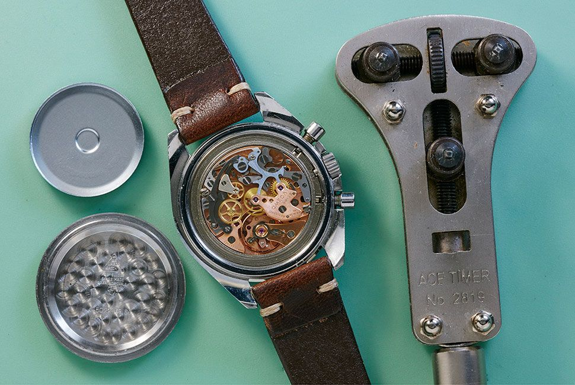
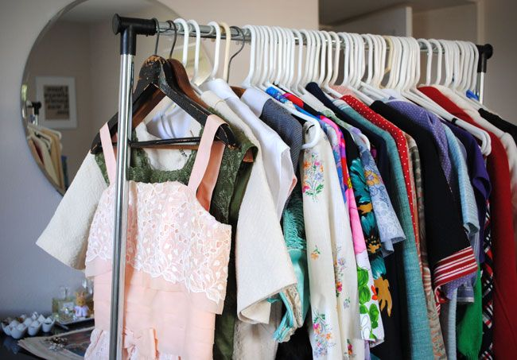

Tips for Repair
Here are some valuable tips to help you care for and maintain your vintage items:
- Store items in a cool, dry place to prevent deterioration.
- Handle delicate items with care to avoid damage.
- Regularly clean and polish items to maintain their shine.
- If you encounter any issues or need repairs, don't hesitate to reach out to our expert team.

